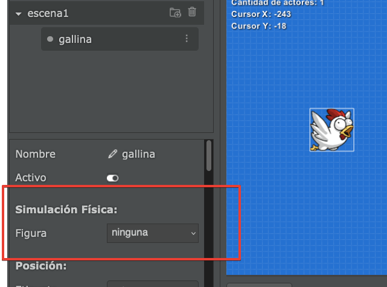
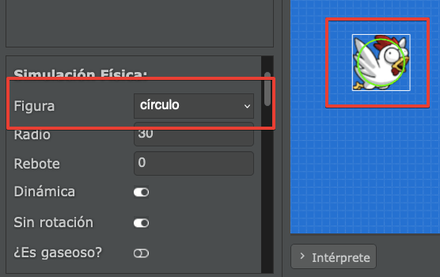
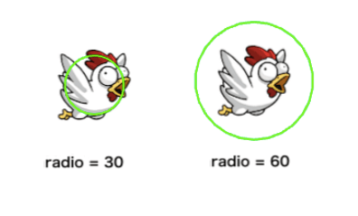
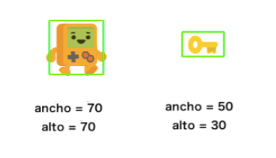
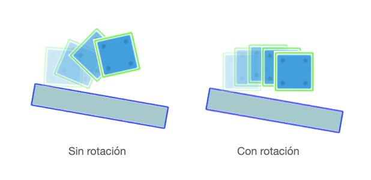

Pilas incluye un motor de física para hacer que los actores puedan colisionar, rebotar entre sí, ser lanzados y reaccionar la aceleración gravitatoria del escenario.
Este motor de física tiene muchas variantes, así que vamos a explorar todas esas oportunidades de configuración en esta sección.
Para que un actor reaccione a las colisiones o se mueva como un objeto físico tenemos que activarle una figura desde las propiedades del actor.
En el panel de propiedades vas a ver una sección llamada “Simulación Física” y dentro de esa sección una propiedad llamada “Figura”:

Si esa propiedad tiene el valor “ninguna”, el actor no podrá colisionar ni moverse usando el botón de física, para la computadora será solamente una imagen a mostrar en la pantalla.
Si la propiedad tiene el valor “círculo” o “rectángulo” veremos que el actor tendrá una forma y tamaño en color verde:

Con esta propiedad, el actor va a reaccionar a la física del escenario, por ejemplo si colocas una plataforma y pulsas el botón ejecutar el actor comenzará a rebotar así:
También vas a notar que al elegir una figura aparecerán más propiedades como radio, rebote, dinámica etc…:

La propiedad radio nos indica el tamaño de colisión si el actor tiene la figura círculo:

Es aconsejable hacer que el tamaño de esta figura coincida con la imagen del actor, porque la figura física será invisible para quienes jueguen a tu juego, los jugadores solo van a ver la imagen del actor.
Estas propiedades son similares a la propiedad radio, pero solo estarán disponibles si la figura es un rectángulo:

Pilas incluye estas figuras porque son las más simples y útiles de todas, si bien
La propiedad rebote indicará de qué forma se tiene que impulsar el actor cuando entre en contacto con otro. Si el valor de rebote es muy bajo, por ejemplo 0, el golpe va a hacer que el objeto se detenga por completo. Mientras que valores como 1.5 harán que el objeto se impulse con más fuerza.
Ten en cuenta que la reacción del actor dependerá del valor que tenga la propiedad rebote en ambos actores.
La propiedad dinámica puede tener los valores si y no. Una figura con dinámica=si rebotará y se moverá de acuerdo a la aceleración gravitatoria del escenario.
Si la figura tiene la propiedad dinamica=no el actor quedará rígido sin moverse ni reaccionar a la aceleración gravitatoria. Esto es ideal para hacer paredes, plataformas u obstáculos del escenario que no queremos que se muevan por ningún motivo.
La propiedad sin_rotacion sirve para fijar la rotación de un actor como se muestra en la siguiente imagen:

Esta propiedad es ideal para personajes, ya que no queremos que ante una colisión aparezcan inclinados.
La propiedad ¿Es gaseoso? se utiliza para hacer que un actor se comporte como un fantasma, y que ninguna figura pueda chocarla o chocar a otros actores.
Las colisiones permiten ejecutar código como respuesta al contacto entre diferentes actores. Las funciones se pueden personalizar para hacer casi cualquier cosa: reproducir un sonido para magnificar el impacto, eliminar alguno de los actores en contacto, emitir efectos etc…
Por ejemplo, imagina que tenemos estos tres actores:

Cuando el juego se ejecute, la plataforma va a quedar fija en pantalla. Mientras que la pelota y la caja van a moverse hacia abajo y colisionarán.
Pilas va a llamar automáticamente a la función cuando_comienza_una_colision ni bien entren en contacto dos actores. Por ejemplo en este caso, pilas va a llamar a la función cuando_comienza_una_colision cuando la pelota colisione con la caja, y luego la plataforma.
class pelota extends Actor {
cuando_comienza_una_colision(actor: Actor) {
if (actor.etiqueta === "caja") {
return true;
}
if (actor.etiqueta === "plataforma") {
this.decir("Oh, colisioné con una plataforma!");
}
}
}En el código hay dos cosas interesantes, tenemos la función cuando_comienza_una_colision dentro de la clase “pelota” para detectar colisiones y además intentamos distinguir contra qué actores se produce la colisión usando etiquetas. :
true.Hay 3 instantes muy importantes cuando se producen colisiones:
Para distinguir estos casos pilas llamará a las tres funciones de forma diferente. Este es un ejemplo de cómo se declaran esas funciones en el código de un actor: